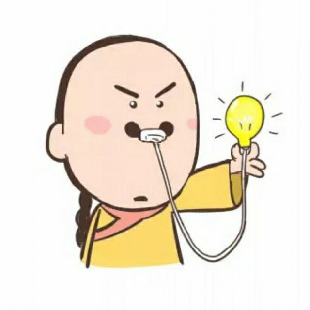

<!DOCTYPE html>
<html lang="en">
<head>
    <meta charset="UTF-8">
    <title>Title</title>
    <style>
        img{
            display: block;
        }
    </style>
    <script src="https://cdn.bootcss.com/jquery/3.4.1/jquery.min.js"></script>
</head>
<body>
    <div id="app">
    </div>
</body>
<script>
    // 1.生成图片
    let i = 0
    while(i++ < 200){
        $("#app").append(``)
    }
    // 2.添加监听
    const io = new IntersectionObserver( (observers)=> {
        observers.forEach(observers => {
            // observers.intersectionRatio 可视区域显示的比例
            //console.log(observers.intersectionRatio)
            if(observers.intersectionRatio > 0 && observers.intersectionRatio <= 1){
                //console.log(observers.intersectionRatio)
                //console.log(observers.target)
                // observers.target目标元素
                // data-src => src
                $(observers.target).attr("src",$(observers.target).attr("data-src"))
                //console.log(observers.target)
                // 停止观察
                io.unobserve(observers.target)
            }
        })
    }, {});

    $('body img').each(function (index,dom) {
            io.observe(dom);
    })


</script>
</html>
